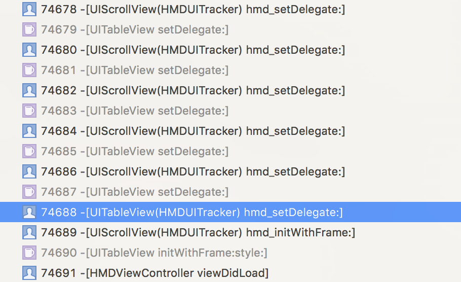

最近研究了一下iOS平台上几个hook框架的hook方案，写文记录一下分析的过程
现有hook框架
- AnyMethodLog
- Aspects
AnyMethodLog hook 方案分析
Hook 代码
1 | //替换方法 |
阐述一下具体的过程:
如何让方法每次都走_objc_msgForward呢？把原来的 sel的IMP改成_objc_msgForward.
这时我们需要保存原来的 IMP 然后hook forwardInvocation … 换成自己的实现，调用原来的IMP和新增的代码
从代码很明显的可以看出，这是利用OC的消息转发机制，选择了合适的时机，进行打桩。
相较于传统的Swizzle方法，这种方法打主桩，是有可行性的。
并且在ForwardInvocation: 处理，虽然相较其余两个转发机制调用的方法的消耗大，但是更灵活一些，最切合问题。
Aspects
Aspects 的代码我看的比较仔细，相对于AnyMethodLog, Aspects 对Hook的处理更成熟，各种情况都做了考虑，这里来重点分析下。
相较于AnyMethodLog, Aspects 不仅可以hook类，也可以对实例进行hook, 粒度更小，适用的场景更加多样化。
这是Aspects Hook 的代码，可以看到对实例和类的处理是不同的。
1 | static Class aspect_hookClass(NSObject *self, NSError **error) { |
熟悉kvo原理的同学，一眼就应该看明白了，这是做了什么事情。
这里可谓是相当巧妙的避免了父类和子类实例hook相同的IMP可能导致的循环调用问题。(下一部分会说明如何避免的)
对类的hook和AnyMethodLog十分类似。就不再多阐述了。网上相关介绍 使用 forwardInvocation+hook类 的资料很多。
Aspects和AnyMethodLog都是利用了forwardInvocation进行处理，这是一致的。
现行Hook方案的问题
自己经常hook的同学可能会发现，在hook时，会出现调用循环的问题。
无论是AnyMethodLog 和 Aspects 都无法同时hook 父类和子类的同一个方法到一个相同的IMP上。为什么呢？
思考一下为什么会出现循环调用？ 那必定是，调用方又被调用者调用了一次，在iOS Hook 中，如果我们hook 了 父类和子类的同一个方法，让他们拥有相同的实现，就会出现这种问题。
看一下阿里🌟的阐述，我觉得还是很清晰的
基于桥的全量方法Hook方案 - 探究苹果主线程检查实现
假设我们现在对UIView、UIButton都Hook了initWithFrame:这个方法，在调用[[UIView alloc] initWithFrame:]和[[UIButton alloc] initWithFrame:]都会定向到C函数qhd_forwardInvocation中，在UIView调用的时候没问题。但是在UIButton调用的时候，由于其内部实现获取了super initWithFrame:，就产生了循环定向的问题。
Aspects 中，Hook 之前，是要对能否hook 进行检查了，对于类，有严格的限制，对于实例则没有限制。
类为什么要限制，上面已经阐释了，那么实例为什么可以呢？
这就是 实例Hook 实现方式所产生的结果。
来理一下实例hook怎么实现的：
- 生成子类
- hook 子类的forwardInvocation(这是一系列操作，不过这个尤为重要)
- 对实例的类信息进行伪装
如果我们有 ClassA 的 实例 a, SubClassA 的 实例 suba.
对他们进行hook viewdidload 方法, 那么会生成两个子类，我们记为prefix_ClassA, prefix_SubClassA,我们对forwardInvocation IMP的替换，实际上是在这两个类上进行的。
当方法调用时:
suba -> forwardInvocation(我们替换的IMP) ->self viewdidload(SubClassA 的IMP) -> super viewdidload(ClassA的实现)
这显然不会导致循环的问题。
如果不采用对生成的子类hook，就会出现问题，可以过一遍方法调用的流程。
总之，还是父类子类的相同方法是否是同一个IMP的核心问题。
随后，Aspects 做了 如果是真正的消息转发响应的处理，有兴趣的同学可以看一下。
JSPatch 的方法替换也是利用了 forwardInvocation进行处理。
方法混写和ISA混写
今天无意在 feiox 留给我的书上发现了这个定义。
再把 Aspects 和 AnyMethodLog 的实现相结合，发现书上说的真的贴切。
- 方法混写
- 影响一个类的所有实例
- 高度透明，所有对象的类都不变
- 需要特殊的覆盖方法实现
- ISA混写
- 只影响目标实例
- 对象的类会变化(不过可以通过覆盖class方法隐藏)
- 覆盖方法使用标准的子类技术实现的
实战中犯过的错误
- 父子类 使用category hook 同一个方法，并且hook的新方法名还是一样的
// TableViewSetDelegate call
// tableView.setdelegate -> scrollView.setdelegate
// HOOK
// TableView.hmd_set -> TABLEOriginSETIMP
// TableView.set -> TABLEhmdSETIMP
// ScrollView.hmd_set -> SCROLLoriginSETIMP
// ScrollView.set -> SCROLLhmd_setIMP
// tableView.setdelegate -> TABLEhmdSETIMP -> TABLOEriginSETIMP -> ScrollView.hmd_set -> TABLEOriginSETIMP
// tableview category TABLEOriginSETIMP 覆盖了 UIScrollView category hmd_set 的实现
// 导致 ScrollView.hmd_set 和 TableView.hmd_set 指向了 同一个 IMP
